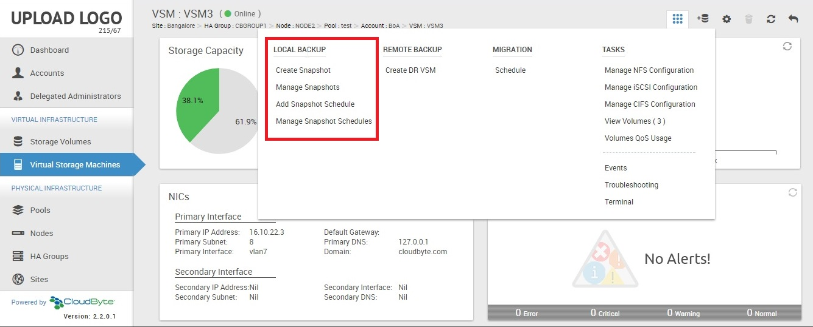
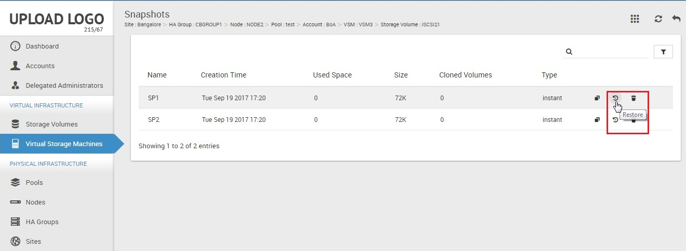
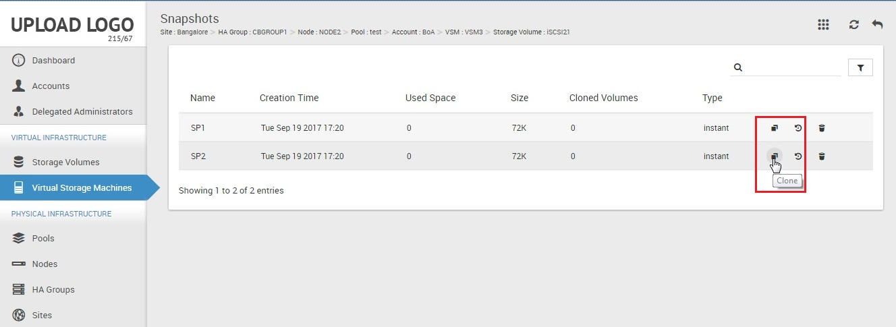

Configuring local backup
Backup refers to copying and archiving of data. In the event of data loss, you can use the backup to restore the original data.
You can create a
- Snapshot, which is a read-only virtual copy of your Storage Volume and VSM.
- Clone, which is a real copy of your Storage Volume
In CloudByte ElastiStor, backup operates as follows:
- The first backup is a full backup.
- The first backup is followed by incremental backups based on snapshot technology.
ElastiStor supports continuous production during snapshot recovery of a Storage Volume.
Backing up VSM
- In ElastiCenter, select Virtual Storage Machines in the navigation pane.
- From the list, select the VSM to create local backup.
- In the following page, go to the Local Backup section of the Actions Icon and then select either of the following options:
- Schedule: Schedule your backup by choosing a frequency.
- Snapshot: Manually create a snapshot on demand.

Add snapshot
- In the Local Backup section, click Create Snapshot.
- In the Create Snapshot dialog box, specify a unique name.
- Click OK.
Add schedule
- In the Local Backup section, click Add Snapshot Schedule. The Add Snapshot Schedule page appears.
- Specify the following details and then click Add.
| Field | Description |
| Name | A unique name for the backup schedule. |
| Retention Copies | Specify the number of backup copies that you want to create. |
| Schedule | Select the frequency. |
Backup best practice
As a best practice, CloudByte recommends a multiple backup schedule.
| Frequency | Retention copies |
| Every 15 minutes | 4 |
| Every hour | 24 |
| Every day | 30 |
Manage snapshots and schedules
To view the snapshots and schedules that you have created, click Manage Snapshots/Manage Snapshot Schedules in the local backup section. You have options to rollback and disable the schedules/snapshots.
Backing up Storage Volume
- In ElastiCenter, select Storage Volume in the Navigation pane.
- From the list, select the Storage Volume to create snapshot.
- In the following page, go to the Local Backup section of the actions icon and then click Create Snapshot.
- In the Create Snapshot dialog box, specify a unique name for the snapshot and then click OK.
Restoring Snapshots
- In ElastiCenter, select Storage Volumes in the Navigation pane.
- From the list, select the Storage Volume to restore data.
- In the following page, go to the Local Backup section of the actions icon and then click Manage Snapshots.
- From the list of snapshots, select the one that you want to restore, click the restore icon, and then confirm at prompt.

Add schedule
- In the Actions Icon's Local Backup section, click Add Snapshot Schedule. The Add Snapshot Schedule page appears.
- Specify the following details and then click Add.
| Field | Description |
| Name | A unique name for the backup schedule. |
| Retention Copies | Specify the number of backup copies that you want to create. |
| Schedule | Select the frequency. |
Manage snapshots and schedules
To view the snapshots and schedules that you have created, click Manage Snapshots/Manage Snapshot Schedules in the local backup section. You have options to rollback and disable the schedules/snapshots.
Cloning the Storage Volume
You can create a READ/WRITE copy of your Storage Volume using the clone option. Unlike Snapshot which is a read-only virtual copy, clone is a real copy of your Storage Volume. It consumes the same disk space as the parent Storage Volume.
ElastiStor uses snapshot as the point of reference for your clone. The workflow is as follows:
- Create a Storage Volume.
- Create a snapshot.
- Create a Clone of the Storage Volume using Snapshot as the point of reference.
Creating a clone
- In ElastiCenter, select Storage Volume in the navigation pane.
- From the list, select the Storage Volume to create a clone.
- In the following page, go to the actions icon and then select Local Backup > Create Snapshot.
- In the Create Snapshot dialog box, specify a name and then click OK.
- Click Manage Snapshot (actions icon > Local Backup).
- From the list of snapshots, go to the one which you want to use as reference for creating the snapshot and then click the Clone icon (highlighted in the circle).
- Specify a unique clone name, where to mount the clone, and then click OK.
